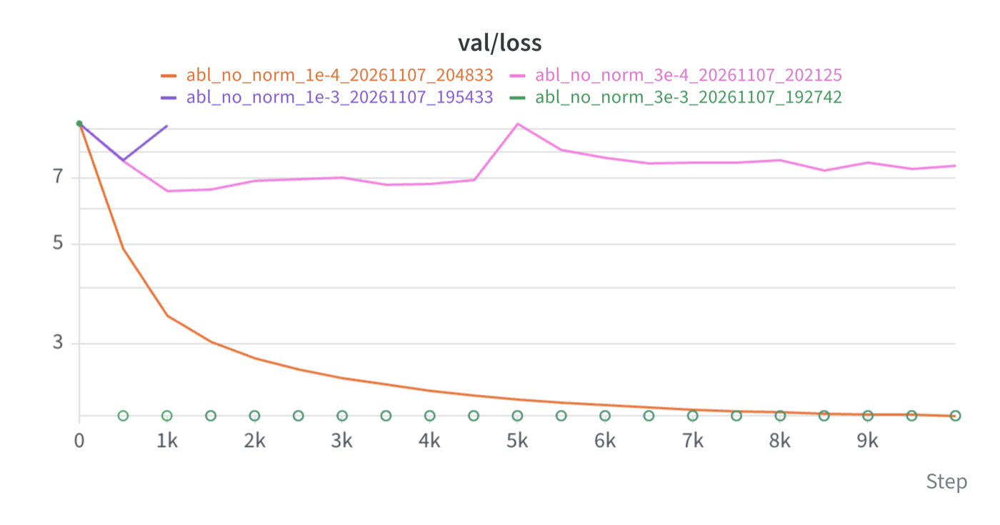
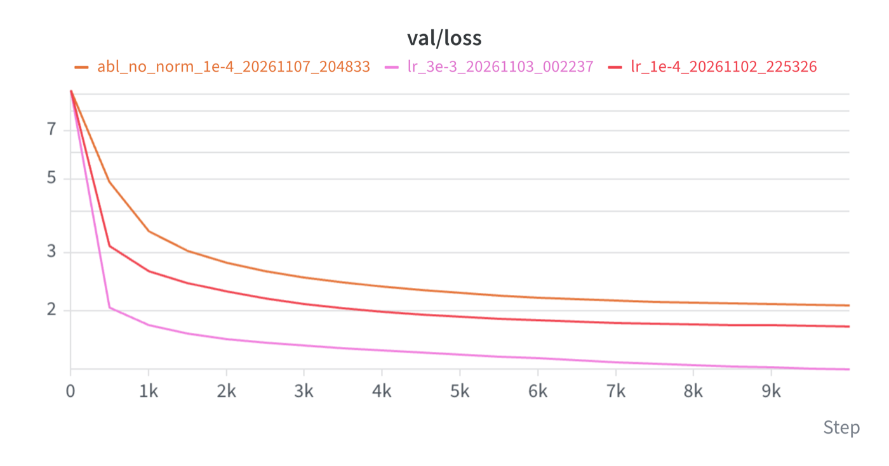
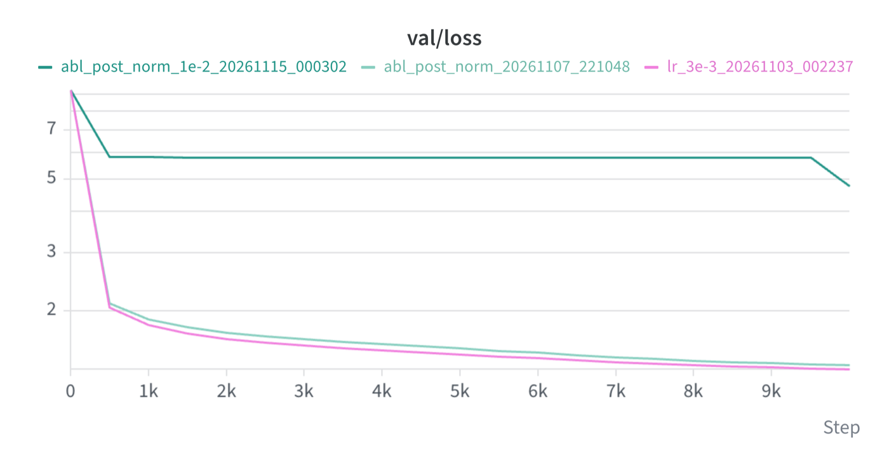

RMSNorm and pre-norm
$$\mathrm{RMSNorm}(a)_i=\frac{a_i}{\mathrm{RMS}(a)}\,g_i,\qquad \mathrm{RMS}(a)=\sqrt{\frac{1}{d_{model}}\sum_{i=1}^{d_{model}}a_i^2+\varepsilon}$$
Goal: every vector entering a sublayer has the same size.
RMS: the typical size of one component of \(a\).
Normalize: divide \(a\) by its RMS. The result has RMS 1.
Gain \(g\): one learned scale per dimension, initialized to 1.
Pre-norm: normalize the sublayer's input. The residual stream itself is left alone.
Final norm: the stream is never normalized, so normalize once before the LM head.
- RMS of one token's vector$$\mathrm{RMS}(a)=\sqrt{\frac{1}{d_{model}}\sum_{i}a_i^2+\varepsilon}\qquad a\in\mathbb{R}^{d_{model}},\;\;\mathrm{RMS}(a)\in\mathbb{R}$$One RMS per token. In code:
mean(dim=-1, keepdim=True), shape(..., 1). \(\varepsilon\) guards against \(a = 0\). - Divide, then apply the gain$$\mathrm{RMSNorm}(a)_i=\frac{a_i}{\mathrm{RMS}(a)}\,g_i\qquad g\in\mathbb{R}^{d_{model}}$$
Why
After the division: RMS 1, length \(\sqrt{d_{model}}\).
\(g\) starts at 1 and lets the model rescale each dimension. Parameters: \(d_{model}\). - The output ignores the input's scale$$\mathrm{RMS}(c\,a)=c\,\mathrm{RMS}(a)\;\;\Longrightarrow\;\;\mathrm{RMSNorm}(c\,a)=\mathrm{RMSNorm}(a)\qquad c>0,\;\varepsilon\to0$$This one property drives both ablations below.
- Compare with LayerNorm$$\mathrm{LayerNorm}(a)_i=\frac{a_i-\mu}{\sigma}\,g_i+b_i$$RMSNorm drops the mean \(\mu\) and the bias \(b\). If \(\mu=0\) then \(\sigma=\mathrm{RMS}(a)\).
- Pre-norm block
- Normalize the input of each sublayer$$y=x+\mathrm{Attn}(\mathrm{Norm}_1(x)),\qquad z=y+\mathrm{FFN}(\mathrm{Norm}_2(y))\qquad x,y,z\in\mathbb{R}^{T\times d_{model}}$$Each norm has its own \(g\). Two per block.
- Unroll the residual stream$$x_L=x_0+\sum_{l=0}^{L-1}F_l\big(\mathrm{Norm}(x_l)\big)$$\(F_l\): one sublayer, attention or FFN. The stream is a running sum. Nothing normalizes it.
- Normalize once before the LM head$$\mathrm{logits}=\mathrm{LMHead}\big(\mathrm{Norm}_{f}(x_L)\big)$$
Why
The head is the only consumer of the stream that is not a sublayer, so it needs its own norm.
Gains in your model: \(2\,d_{model}\) per block plus \(d_{model}\) for \(\mathrm{Norm}_f\).
Toy: \(d_{model}=4\). Rows are the Attention chapter's \(x\), scaled by 1, 3, 0.5, 10 so their sizes differ. \(g=[1, 1, 2, 0.5]\), hand-picked.
Yours: \(d_{model}=512\), \(\varepsilon=10^{-5}\), \(g\) learned from all ones.
x = x.to(torch.float32)output = self._norm(x.float()).type_as(x)rms = torch.sqrt(x.pow(2).mean(dim=-1, keepdim=True) + self.eps)return x * torch.rsqrt(x.pow(2).mean(-1, keepdim=True) + self.eps)result = x / rms * self.weightreturn output * self.weightx = x + self.attn(self.ln1(x), token_positions)x = x + self.ffn(self.ln2(x))x = x + self.attn(self.ln_1(x))x = x + self.mlp(self.ln_2(x))x = self.ln_final(x)x = self.transformer.ln_f(x)mine: cs336_basics/model.py:76, :277, :363. Llama: meta-llama/llama llama/model.py. nanoGPT: karpathy/nanoGPT model.py (MIT).
Llama multiplies by rsqrt instead of dividing by sqrt, and uses \(\varepsilon=10^{-6}\). nanoGPT's norm is LayerNorm, in the same pre-norm position.
Toy: one token (cat), 4 sublayers. Every sublayer is the same fixed map \(F(x)=2Px\), where \(P\) shifts each dimension one place to the right, so \(\mathrm{RMS}(F(x))=2\,\mathrm{RMS}(x)\). \(g=1\).
Yours: 4 blocks, so 8 sublayers, each an attention or a SwiGLU with learned weights.
x = x + self.attn(self.ln1(x), token_positions)x = x + self.ffn(self.ln2(x))x = x + self.attn(x, token_positions)x = x + self.ffn(x)Your no_norm removes the two block norms. ln_final still runs.
- With norm, an update cannot depend on the stream's size$$F\big(\mathrm{Norm}(c\,x)\big)=F\big(\mathrm{Norm}(x)\big)\;\;\Longrightarrow\;\;\|x_L\|\le\|x_0\|+\sum_{l}\big\|F_l(\mathrm{Norm}(x_l))\big\|$$Each sublayer adds a bounded amount. Growth is at most linear in depth.
- Without norm, an update scales with the stream$$\|F(x)\|\le k\,\|x\|\;\;\Longrightarrow\;\;\|x_{l+1}\|\le(1+k)\,\|x_l\|\;\;\Longrightarrow\;\;\|x_L\|\le(1+k)^L\,\|x_0\|$$
Why
\(k\): how much the sublayer's weights amplify their input. The bound is reached when \(F(x)\) points along \(x\).
Growth can be exponential in depth, and \(k\) changes with every optimizer step. A larger LR moves the weights, and so \(k\), further per step. - Attention scores grow with the square of the stream$$Q=XW_Q,\;K=XW_K\;\;\Longrightarrow\;\;S(c\,X)=c^2\,S(X)$$Large scores push softmax to one-hot, the same failure \(\sqrt{d_k}\) guards against.
| No norm, LR | Outcome |
|---|---|
| 3e-3 | NaN |
| 1e-3 | NaN |
| 3e-4 | stalls near 7.46 |
| 1e-4 | trains |

| Model | Val loss |
|---|---|
| Best baseline, LR 3e-3 | 1.3387 |
| Baseline, LR 1e-4 | 1.8004 |
| No norm, LR 1e-4 | 2.0827 |

Of the 0.74 gap to the best baseline: about 0.46 comes from the lower LR, about 0.28 from removing the norm.
x = x + self.attn(self.ln1(x), token_positions)x = x + self.ffn(self.ln2(x))x = self.ln1(x + self.attn(x, token_positions))x = self.ln2(x + self.ffn(x))- Forward: the stream is renormalized after every sublayer$$x_{l+1}=\mathrm{Norm}\big(x_l+F(x_l)\big)\;\;\Longrightarrow\;\;\mathrm{RMS}(x_l)=1\;\text{ for all } l \quad (g=1)$$Sizes are as controlled as in pre-norm. The difference is in the backward pass.
- Backward, pre-norm: one path skips every norm$$\frac{\partial x_{l+1}}{\partial x_l}=I+\frac{\partial F(\mathrm{Norm}(x_l))}{\partial x_l}$$Multiply these over all layers: one term is \(I\). The gradient reaches every layer through it unchanged.
- Backward, post-norm: every path crosses every norm$$\frac{\partial x_{l+1}}{\partial x_l}=J_{\mathrm{Norm}}(u_l)\left(I+\frac{\partial F(x_l)}{\partial x_l}\right),\qquad u_l=x_l+F(x_l)$$No term is \(I\). With \(L\) sublayers above it, a gradient is multiplied by \(L\) norm Jacobians.
- The norm Jacobian$$J_{\mathrm{Norm}}(u)=\frac{1}{\mathrm{RMS}(u)}\,\mathrm{diag}(g)\left(I-\frac{uu^\top}{d_{model}\,\mathrm{RMS}(u)^2}\right)$$
Why
From \(y_i=g_i u_i/r\) with \(r=\mathrm{RMS}(u)\) and \(\partial r/\partial u_j=u_j/(d_{model}\,r)\).
Two effects: it rescales the gradient by \(1/\mathrm{RMS}(u)\), and it removes the component along \(u\), since \(J_{\mathrm{Norm}}(u)\,u=0\).
Reference: Xiong et al. 2020, "On Layer Normalization in the Transformer Architecture".
| LR | Pre-norm (baseline) | Post-norm |
|---|---|---|
| 3e-3 | 1.3387 | slightly above baseline at every eval |
| 1e-2 | 1.36 | near 6 until about step 9.5k |

Post-norm values are read off the plot. The writeup section for this ablation has no final numbers yet.
Write RMSNorm with the shape of every term. What is \(\mathrm{RMSNorm}(c\,a)\)?
\(a,g\in\mathbb{R}^{d_{model}}\), \(\mathrm{RMS}(a)=\sqrt{\frac{1}{d_{model}}\sum_i a_i^2+\varepsilon}\in\mathbb{R}\), output \(a_i g_i/\mathrm{RMS}(a)\in\mathbb{R}^{d_{model}}\). \(\mathrm{RMSNorm}(c\,a)=\mathrm{RMSNorm}(a)\) for \(c>0\), ignoring \(\varepsilon\).
Why does a pre-norm model need a final norm before the LM head?
Pre-norm only normalizes sublayer inputs. The stream \(x_L=x_0+\sum_l F_l(\mathrm{Norm}(x_l))\) is an unnormalized sum, and the head reads it directly.
Without norm, why can the stream grow exponentially with depth?
A sublayer's output scales with its input: \(\|F(x)\|\le k\|x\|\), so \(\|x_L\|\le(1+k)^L\|x_0\|\). With norm, \(F\) sees a unit-RMS input whatever the stream's size, so each layer adds a bounded amount.
In post-norm, what does every gradient path cross that one pre-norm path avoids?
The norm Jacobian of every sublayer above it. Pre-norm's layer Jacobian is \(I+\dots\), so one path is the identity. Post-norm's is \(J_{\mathrm{Norm}}(I+\dots)\), with no identity term.